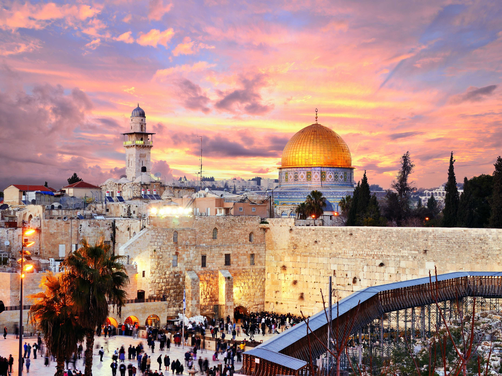
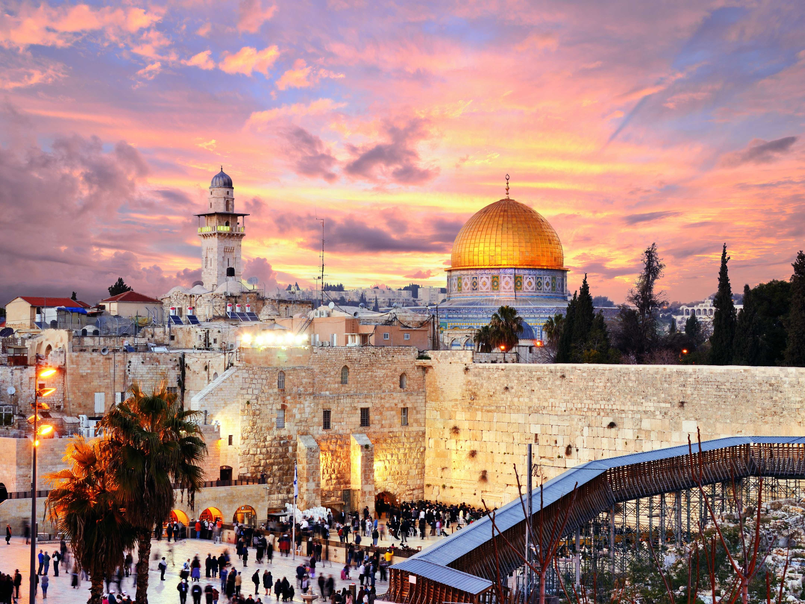

Jakarta je glavni grad Indonezije smješten na otoku Java. Poznat je po gustoj urbanizaciji, visokim neboderima, te bogatom kulturnom baštinom koja uključuje muzeje, hramove i ukusnu hranu.
Johannesburg je najveći grad u Južnoj Africi. Poznat je po svojoj raznolikoj kulturi, poslovnim četvrtima i povijesti borbe protiv apartheida. Grad također nudi brojne muzeje i parkove.
Jerusalem je sveti grad za tri glavne svjetske religije: kršćanstvo, islam i judaizam. Ima bogatu povijest, uključujući Zid plača, Crkvu Svetog Groba i Al-Aqsa džamiju.
Jeddah je glavni lučki grad Saudijske Arabije na obali Crvenog mora. Poznat je po svojim prepoznatljivim tornjevima i arapskoj arhitekturi, kao i po luksuznim trgovačkim centrima.